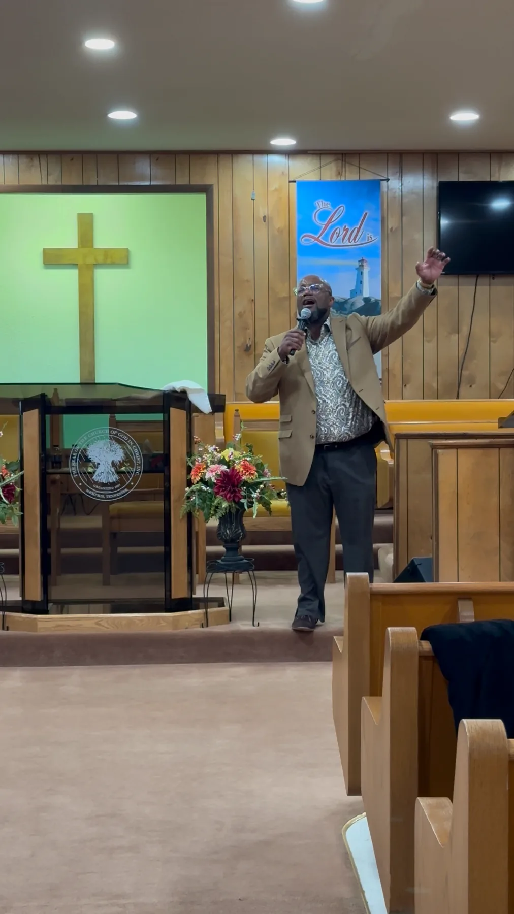

Romans 10:17 · KJV
“So then faith cometh by hearing, and hearing by the word of God.”
Faith grows through hearing God’s Word.
The Word
Explore worship services, biblical teaching, and messages that encourage spiritual growth and the practical application of God’s Word.

Worship & the Word
Watch worship services and biblical teaching on our official Facebook page.
Official church Facebook
Find worship services and updates on our official Facebook page.
Visit Our Official Facebook Page ↗Our Foundation Is Jesus Christ · 1 Corinthians 3:11

Romans 10:17 · KJV
“So then faith cometh by hearing, and hearing by the word of God.”
Faith grows through hearing God’s Word.
2 Timothy 4:2 · KJV · Summary
Preach the Word faithfully.
James 1:22 · KJV · Summary
Put the Word into practice, rather than only listening.